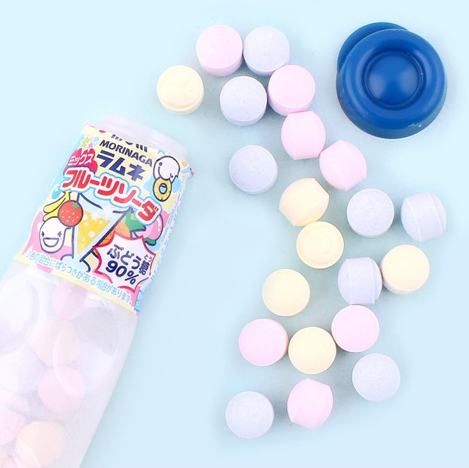
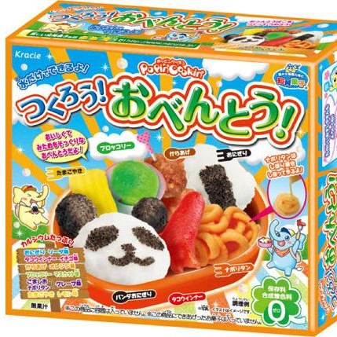
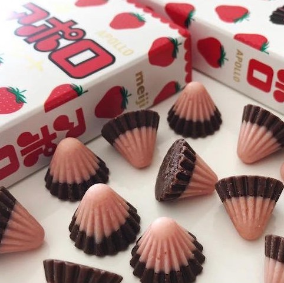

Ramune Candy
Ramune Candy dates back to 1876, it’s one of the biggest candies in Japan. They are traditionally a lemon and lime flavour with a slight fizz, nowadays you can often find them in a variety of flavours.
Kracie Popin Cookin Kits
Kracie Popin Cookin Kits were made famous over social media. These DIY kits are candy treats where you mix flavoured powders and water together and place into moulds to make candy styled food such as burgers and sushi. Many kits are only sold for limited time with special editions launched for different seasons, making them become a popular craze, not just in Japan, but all over the world.
Apollo
A chocolate classic in japan, Apollo was inspired by the Apollo space missions from the 1960’s. They are milk chocolate domes dipped in strawberry flavoured white chocolate.